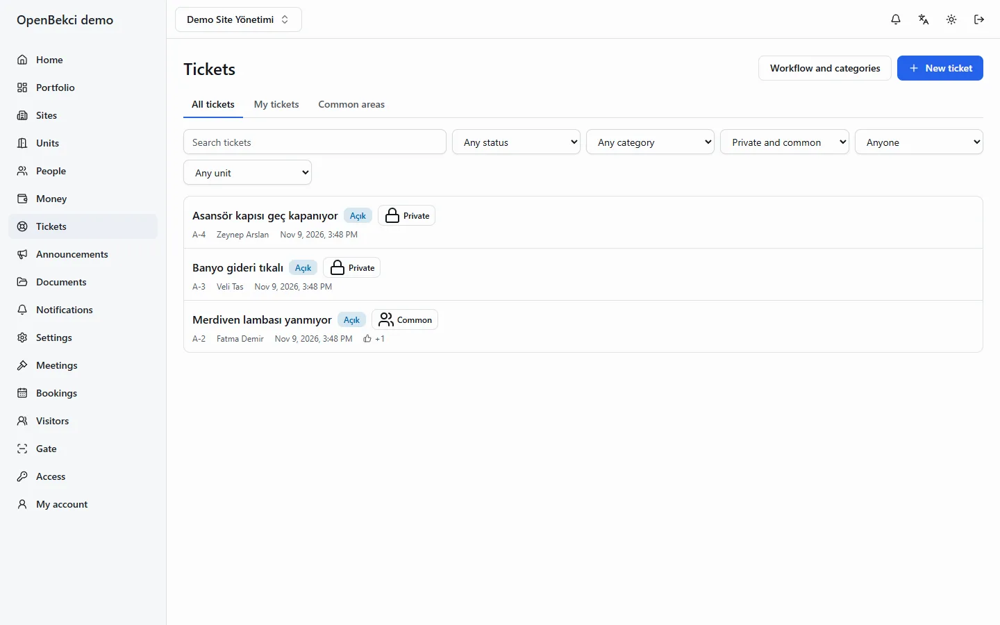
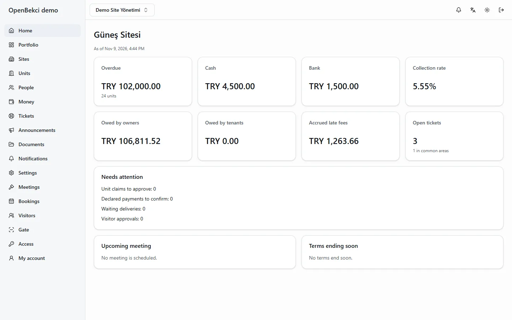
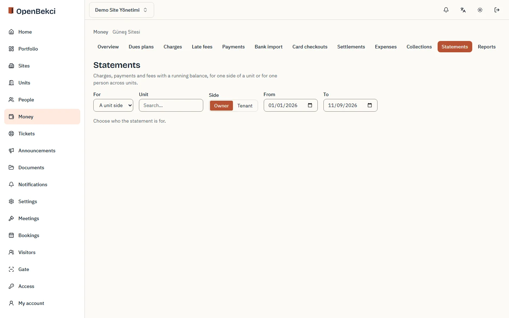
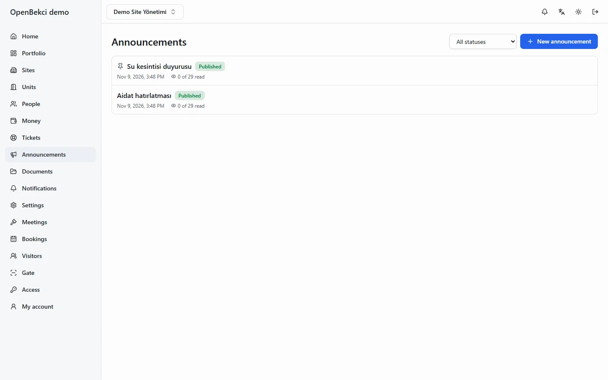
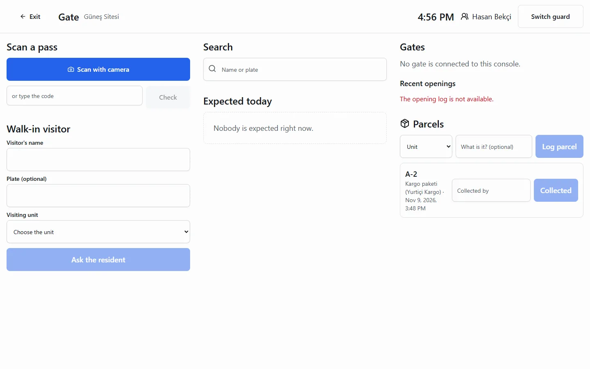
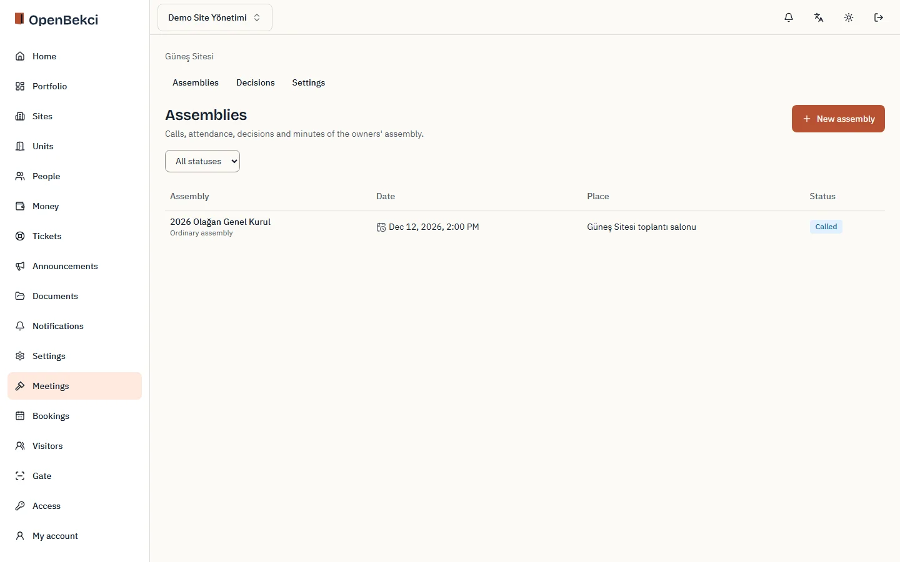

Tracks every site request as a ticket
Residents attach up to 10 photos. A common problem takes +1 votes instead of duplicates, and internal notes stay with management.

Dues, assemblies, tickets, announcements and gate control for managers, boards and residents. AGPL-3.0, self-hosted in one compose file.

Dues generate each period and arrive by cash, bank transfer or card. Every statement shows the late fee accrued to today.

Residents attach up to 10 photos. A common problem takes +1 votes instead of duplicates, and internal notes stay with management.

Choose the audience and the channels, see the SMS count before you publish, then check who opened it and who has not.

Guards scan a pass or log a walk-in, and the resident approves from the app. Each action carries a guard’s name.

OpenBekci builds the call letter and a delivery checklist per owner, then runs the day: attendance, live quorum and a recorded count for every agenda item.

The ledger is never edited. A mistake is reversed with a visible correction and a reason, so the sheet the board reads in January matches the books kept all year.
Quorum, decision thresholds, vote caps and notice periods, editable where the management plan allows.
Hosted checkout, signed webhooks and refunds, with the provider fee booked as an expense.
Ziraat and İş Bankası CSV and Excel statements, matched to units by reference, name and amount.
Sign-in codes, invitations, receipts and reminders. İleti Merkezi is the alternative provider.
Disclosure and explicit-consent texts in Turkish and English; the debtor list is never public.
Fill in the required values in .env, start the stack and create your first organization. The compose file runs OpenBekci, PostgreSQL 17 and Caddy with automatic HTTPS.
A 2 vCPU, 2 GB server serves a 500-unit organization. The same product runs hosted or self-hosted, and a site can move between them.
Short answers on data, the gate and where the project stands.
Yes. A manager exports a whole site (people, money history, documents, decisions, meetings, settings) and imports it into another organization. Exporting asks for identity confirmation again and is audited.
Yes, for Android and iOS, in English and Turkish. It connects to any OpenBekci server, hosted or self-hosted. Managers do their bookkeeping on the web.
The on-site agent decides locally and logs every decision. A credential revoked while offline keeps working for 72 hours by default, then the agent stops opening.
No. Identity is a TCKN check plus manual verification by the manager.
OpenBekci is pre-1.0. Minor versions may change configuration, and the release notes list every change under a fixed heading.